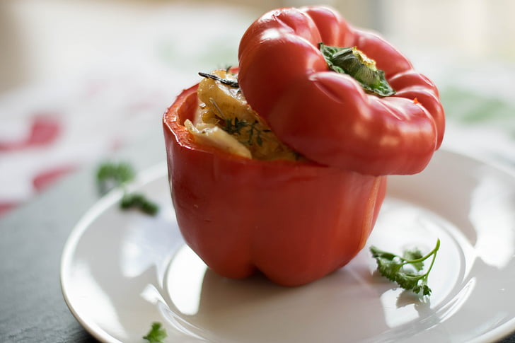

Stuffed Pepper

Description
This recipe is a very satisfying sandwich alternative great for low carb diets. It is one of the few low carb meals that doesn't make me feel like I am starving to death.
Ingredients
- 1 bell pepper
- Feta cheese
- Sliced turkey breast
- Green olives
- Diced onion
- 1 tbsp olive oil
Steps
- Split pepper in half with knife and then remove the stem and seeds.
- Add feta cheese, olives and diced onion to pepper halves.
- Add 1/2 tbsp of olive oil to each pepper.
- Cover with turkey breast slices.
- Enjoy!